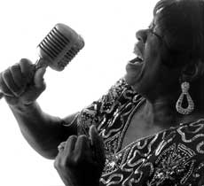

- Блюз - мои корни, - говорит Коко Тейлор. И эта фраза совсем не дежурная блюзовая банальность, а чистая и теперь уже редкая правда. Время беспощадно уносит тех, чьи корни питались в блюзовой земле американского Юга блюзовых времен 30-х и 40-х. Коко тогда только на свет появилась.Ее настоящее имя Кора Волтон (Cora Walton). И выросла она на хлопковых полях недалеко от Мемфиса в фанерном однокомнатном домике вместе с многочисленными своими братьями да сестрами. С 11 лет, оставшись без родителей, Кора испила всю чашу блюзовой нужды. Бродяжничая по дорогам Теннеси и Миссисипи, она слышала многих великих исполнительниц - от Биг Мамы Торнтон до самой Бесси Смит. Затем она слыхивала и Хаулина Вулфа и Мадди Уотерса, и Сонни Бой Уильямсона. Кора и не мечтала тогда присоединяться к этим гигантам, хотя и обожала петь и госпел, и блюз. И все-таки немного позднее, к ее удивлению, это произошло.
В 18 Кора Волтон уже успела выйти замуж и стать миссис Тейлор. Где-то в конце 70-х ее супруг (ныне покойный Роберт “Попс” Тейлор) в поисках работы отправился в Чикаго и Кора последовала за ним. 35 центов да пачка кукурузных хлопьев - это все, что у них было, - вспоминает Коко. Коко - эта детская кличка на всю жизнь прилепилась к ней. Все из-за непреодолимой и по сей день страсти к поеданию шоколада. Только вот в Чикаго ей и удалось впервые утолить, как следует, свой шоколадный голод.
Устроившись уборщицей в респектабельное заведение северной части города, где обитали белые, она часто пропадала в черных клубах Южного Чикаго и уже вскоре поразила своим пением самого Вилли Диксона.
- Господи, никогда не слышал, чтобы женщина вот так вот пела блюз, - воскликнул он. - Сегодня слишком много мужчин исполняют блюз и если что и нужно мне сейчас, так это женщина, поющая блюз твоим голосом, - заключил Диксон, после чего он же ведь и привел Коко в студию “Chess rec.”. Это был 1962 год и Коко исполнилось тогда 20. Под лейблом “Chess” она записала несколько синглов и пару альбомов, включая свой знаменитый “Wang Dang Dooble”. Этот хит и закрепил за Коко Тейлор репутацию блюзовой вокалистки номер один. Много самой разной воды утекло с тех пор, но даже в худшие времена для блюза, имя Коко Тейлор не забывалось. Ни один блюзовый фестиваль без нее не обходился. И вот тогда молодой продюсер, он же и основатель лейбла “Aligator Rec.” Брюс Иглауэр, потрясенный ее голосом не менее Вилли Диксона, открыл для Коко новые горизонты. В самом кризисном для блюза 75-м, первый же ее аллигаторовский диск был номинирован ан “Грэмми”. С тех пор под этим лейблом Коко Тейлор записала еще семь альбомов (шесть из них также номинированы на “Грэмми”).
Сейчас Коко - безусловная рекордсменка среди блюзовых вокалисток по накопленному количеству премий имени W.C.Handy. Всего этих премий у нее девятнадцать. Подлинная слава и популярность пришла к ней в 90-х. Благодарное время для всех, блюзменов, кто сумел продержаться! В 93-м мэр города Чикаго объявил Коко городской легендой года, и тут же журнал “Chicago Magazine” назвал ее чикагцем года (Chicagoan of the year). Ну а потом слава и почести посыпались на Коко, как из рога изобилия. Она была возведена в зал славы блюза, а маститый “Roling Stone” признал ее величайшей блюзовой вокалисткой среди женщин своего поколения. Она появилась на сцене во время чествования Президентов, при инаугурации Джорджа Буша и дважды при инагурации Билла Клинтона. Разумеется, нашумевший фильм “Братья Блюз 2002 также не обошелся без ее участия. Сейчас Коко Тейлор неимоверно закручена в чрезвычайно плотный гастрольный график. За год она выходит на сцену более 100 раз. Появляется на концертах и Бадди Гая и Би Би Кинга и даже у таких не совсем блюзменов, как Роберт Плант и Джимми Пейдж. А недавно ей удалось осуществить свою давнишнюю мечту - Коко Тейлор, наконец-то, открыла в Чикаго свой собственный клуб, где она, видимо, предполагает выступать в основном в тесном кругу близких поклонников.
Ну и последняя сенсация - явный претендент на очередную премию им. У.Хэнди - недавно появившийся альбом “Royal Blue”. Это уже настоящее энергетическое потрясение.
- Мой блюз не для тех, кто сидит, свесив голову, - восклицает Коко Тейлор. - Я пою, чтобы заставить всех и все кругом двигаться.
Используя материалы “Aligator” - Александр ЧЕЧЕТТ.
Перепечатано из журнала Jazz-квадрат